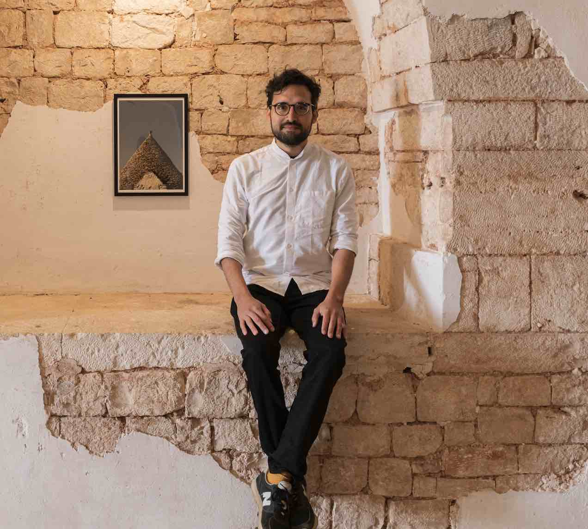

About me!
Hello! I'm Roberto.Transitioning from a content specialist to a front-end developer. My background in digital media and content creation has set the stage for my new journey into coding. I'm currently focused on learning HTML, CSS, and JavaScript, aiming to blend my skills in content with web development. My goal is to create engaging and user-friendly websites, applying my creative skills and strategic thinking in this exciting tech field.